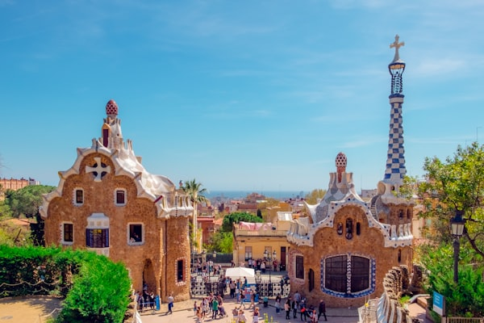
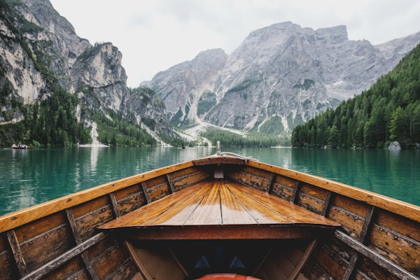
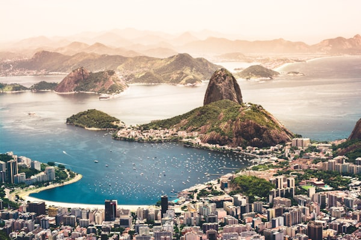

More Itineraries to Explore

7 Days
Greek Islands Odyssey
Santorini, Mykonos, and Crete for one unforgettable week in the Aegean.
View Plan ->
14 Days
Classic Europe Grand Tour
London to Paris to Amsterdam to Rome. Four iconic cities, two weeks, countless memories.
View Plan ->
5 Days
Bali Bliss and Wellness
Yoga retreats, temple blessings, rice terrace walks, and sunset at Tanah Lot.
View Plan ->
8 Days
East Africa Safari
Serengeti, Ngorongoro Crater, and Zanzibar beach in one unforgettable adventure.
View Plan ->
12 Days
South America Highlights
Rio, Iguazu Falls, Buenos Aires tango, and the salt flats of Bolivia in style.
View Plan ->
10 Days
Thailand: Temples to Beaches
Bangkok street food, Chiang Mai elephants, and crystal Koh Samui waters.
View Plan ->